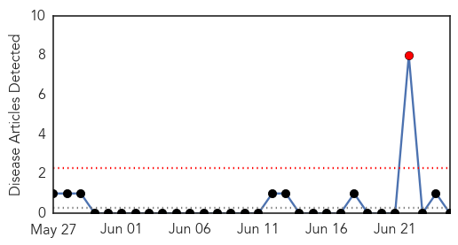
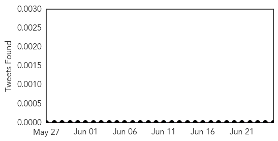
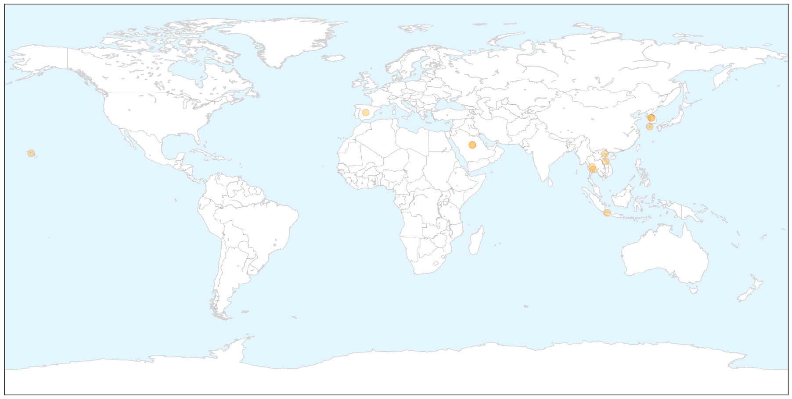
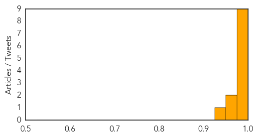

Yellow Fever
30-Day Web Trend
1 alerts, 0 warnings

30-Day Twitter Trend
0 alerts, 0 warnings

Article Locations


Article Confidences

Top Articles:
-
No articles found for Jun 25, 2015
Top Tweets:
-
No tweets found for Jun 25, 2015
MERS
30-Day Web Trend
24 alerts, 3 warnings

30-Day Twitter Trend
8 alerts, 0 warnings

Article Locations

X

Article Confidences
Top Articles:
- 0.997
- Russian traveler in Vietnam tests negative for MERS — Talk Vietnam
- 0.997
- Korea MERS cases at 180; studies note outbreak patterns
- 0.997
- Russian traveler in Vietnam tests negative for MERS
- 0.996
- (2nd LD) S. Korea reports 2 more deaths from MERS, one new case
- 0.996
- (2nd LD) S. Korea reports 2 more deaths from MERS, one new case
- 0.993
- Mers outbreak: WHO issues 'wakeup call' as Rep. of Korea orders hospitals to track visitors
- 0.986
- Hanoi extends precautions against MERS-CoV
- 0.982
- News Scan for Jun 25, 2015
- 0.979
- Indonesian toddler tests negative for MERS
- 0.969
- Indonesian Toddler Suspected With MERS Virus Tests Negative
- 0.955
- Tourist tests negative for MERS
- 0.936
- State issues MERS alert Hawaii News, Honolulu, Honolulu News, Sports, Editorial, Features, Travel and Business
Top Tweets:
-
No tweets found for Jun 25, 2015